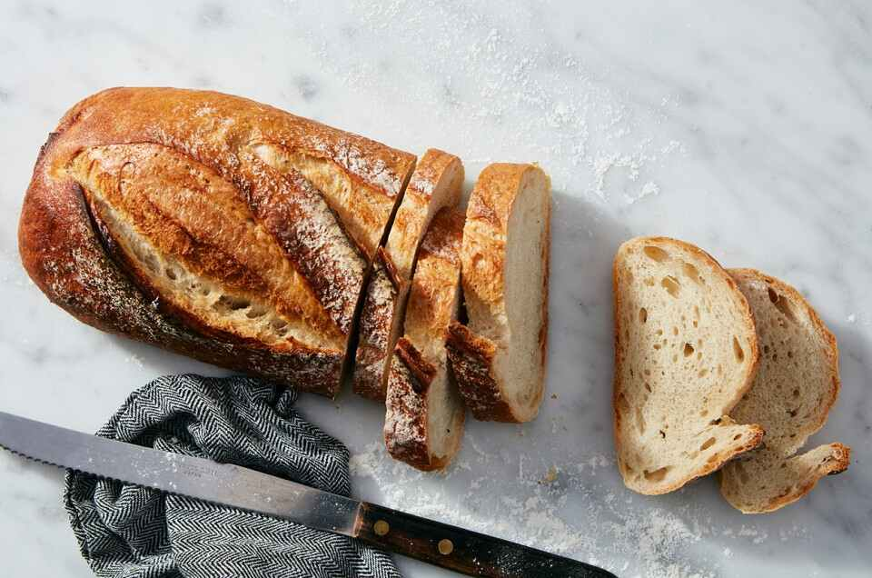

Rustic Bread

Description
This is Brian Lagerstrom's rustic bread recipe, which I make often.
So far it's been impossible to screw up, always yielding delicious bread.
Ingredients
Poolish
- 150g bread flour
- 150g room temperature water
- pinch yeast
Bread
- 280g warm water
- 2g yeast
- 350g bread flour
- 50g whole wheat flour
- 10g salt
Steps
Make the poolish (one night beforehand)
- Stir yeast into water
- Add flour, stir with spoon until combined
- Cover, store on counter 16-24 hours
Make the bread
- Stir yeast into water
- Add poolish and stir
- Add flour, then salt, stir with spoon until too thick to stir anymore
- With thoroughly wet hand, squeeze dough while rotating bowl until well incorporated
- Cover, let rest 30 minutes
- Stretch and fold 8 times, rotating bowl 90 degrees each time
- Scoop and tuck 6-7 times
- Cover, let rest 30 minutes, repeat steps 6 and 7
- Cover, let rest 1 hour
- Liberally flour top of dough and turn out onto work surface
- Divide into two equal pieces
- Tuck each under around the edges using a dough card to give them some shape
- Place on floured parchment on a sheet tray, cover with another sheet tray
- Proof 30-40 minutes
- Meanwhile, preheat oven to 500 with Dutch oven inside
- When done proofing, slash tops of loaves if desired
- Cut parchment in half to separate loaves
- Drop one loaf into preheated Dutch oven
- Cook covered for 12 minutes
- Remove lid, reduce oven temp to 485, cook 12-15 minutes until quite dark
- Repeat 18-20 with second loaf